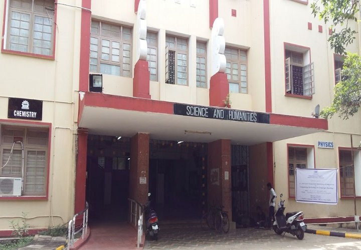

SAS University was established on 4th September, 1978 as a unitary type of University.
It offers higher education in Engineering, Technology, Architecture and
Applied Sciences relevant to the current and projected needs of the society.
Besides promoting research and disseminating knowledge gained therefrom, it fosters cooperation
between the academic and industrial communities.
The University is situated in the southern part of the city of Chennai and it is 3 kms.
from the nearest Railway Station (Guindy) and 10 kms from Chennai Airport. The
University's Main Campus extends over 189 acres abutting the Adyar River on the north
and Raj Bhavan on the south.
In 2001, SAS University was converted to an affiliating type University by bringing
together all the Engineering colleges in the State of Tamil Nadu and was again
reconverted to the unitary type in 2010. In 2012, SAS University was again converted to
an affiliating type of University by bringing together all the Engineering Colleges in the
State of Tamil Nadu under one umbrella to ensure uniform quality in engineering
education.
OBJECTIVES OF THE UNIVERSITY:
1) To constantly raise the quality of engineering education thereby to produce
superior human resource to match rapid technological developments
2) To share its academic experience and infrastructure with other institutions for
providing quality education across the State and help students to fulfill their
dreams.
3) To uphold the highest ethical and professional standards while imparting
engineering education and while fulfilling its obligations to students and staff.
4) To serve the society with technological advancement and to actively take part in
building knowledge-based society.
VISION:
SAS University shall strive towards a World Class Institution by producing
professionals with high technical knowledge, professional skills and ethical values. The
University shall be a preferred partner to the industry and community for contribution
towards their economic and social development by providing high quality manpower
through excellence in teaching, research and consultancy.
SAS University shall be recognized as a point of reference, a catalyst, a facilitator,
a trend setter and a leader in technical education.
ACADEMIC DETAILS:
SAS University offers 29 UG and 90 PG Programmes in various disciplines in the
University Departments and 41 UG and 57 PG programmes in Affiliated Institutions. About
16007 students are pursuing their degree programme in the University Departments and
about 7,21,276 students are pursuing their degree programme in the Affiliated institutions.
SAS University is proud of having 14023 Ph.D. scholars on roll in Science, Engineering
and Technology.
UNIQUE RECOGNITIONS:
University with Potential for Excellence
University Grants Commission has recognized SAS University as “University with
Potential for Excellence” (UPE) in the XII plan period for its expertise to develop Research
& Development activities in the area of Biomedical Engineering and Applications.
World University Ranking (QS)
In World University Ranking SAS University is ranked 201 as per QS (Quacquarelli
Symonds) in the Faculty of Engineering and Chemical during the year 2017-2018. In the
subject of Mechanical, Aeronautical and Manufacturing Engineering, SAS University is
ranked between 151 and 200 in the global level and 7 in the national level.
NIRF Ranking:
In the National Institutional Ranking Framework (NIRF) Ranking 2017 by the
MHRD, New Delhi, SAS University is ranked as below among the various
Universities/Institutions that took part in the NIRF 2017 in India.
6th Rank in the University category
8th Rank in the Engineering category
13th Rank in the Overall category
NAAC
NAAC re-accredited SAS University with a CGPA of 3.46 on a four-point scale
(highest among all the State University of Tamil Nadu) at “A” grade valid for a period of
five years from 24th September 2014.
h-index
The University stands 2nd in India in the ‘h’ index citations, based on the research
papers published by its faculty members and research scholars.
OTHER RECOGNITIONS:
1) UGC has recognized Crystal Growth Centre, SAS University as a National Facility.
2) Institute of Remote Sensing (IRS) has been recognized by Government of India for
coastal zone regular mapping. It is also the first state Centre to establish GIS.
3) National Centre for Sustainable Coastal Management (NCSCM) has been
established by the Ministry of Environment, Forest and Climate Change with a grant
of Rs.200 Crores at Anna University to promote sustainable coasts through
increased partnerships, conservation practices, scientific research and knowledge
management for the benefit of current and future generations.
4) National Hub for Healthcare Instrumentation Development (NHIID), a national
facility was established with an initial funding of Rs.12.4 crores for DST to promote
the development of indigenous products, calibration standards, platform
technologies and human resource development in the healthcare area, for the
country.
5) University Library has been ranked 7th in e-resources usage in all over India and
stands in the 1
st position in Tamil Nadu. We have currently more than one lakh
sixty thousand books with 500 print journals (more than 12000 e-journals).
6) Centre for University Industry Collaboration (CUIC) received Sustainable Institute
Industry Partnership (SEED) award for the two consecutive years for the
achievements in the areas of industry academia.
SIGNIFICANT ACHIEVEMENTS
Academic:
1) The University has revised the curricula and syllabi for the programmes offered at
University Departments from 2015-16 with Choice Based Credit System (CBCS).
University is to initiate CBCS with new curricula and syllabi under regulation 2017
for affiliated colleges.
2) e-Patasala content for the PG Courses of Computer Sciences are prepared by the
SAS University with the funded by Government of India.
3) National Mission for Education through Information & Communication programme is
coordinated by the Educational Multimedia Research Centre (EMMRC) under
which the e-content for the PG course on Data Base Management, Software
Engineering, Operating System and Data Structure have been prepared and
uploaded in the SWAYAM Portal. This is under the programme of Prime Minister
Digital Initiative for the benefit of massive open online courses (MOOC) which will
enable any citizen to correspondingly learn a desired subject of interest at their own
convenience.
4) The Centre for Faculty Development of SAS University Chennai conducts the
SAS EDUSAT live interactive audio-video lecture programmes transmitted
through KU-Band provided by ISRO, Bangalore from January 2006. Presently it
focuses on the needs of B.E. students of Mechanical Engineering, Electrical and
Electronics Engineering, Electronics and Communication Engineering, Computer
Science and Engineering, Civil Engineering, General Engineering subject and
Mathematics meant for students of all branches. SAS EDUSAT also conducts
programmes for students on improving the “Employability Skills of Students” and for
Faculties on “Latest Technologies”.
5) Secured Examination Management System (SEMS) developed by the Faculty at
the O/o. the Additional Controller of Examinations is a web-based application for
efficient management of Examination activities of University Departments. This
system handles the process of enrolment by the students from start to the
completion of the Examination and issue of Grade Sheets. It is an online
application, which provides services from anywhere at any time (24/7). This
application supports Examination Management of all regulations including Choice
Based Credits System (CBCS) for University Departments of SAS University.
Research:
1) SASAT developed by SAS University is the first satellite designed, developed
and operated by an Indian University (It was launched on 21.04.2009 and operated
in orbit for a period of three years).
2) SAS University got selected for support under the Tamil Nadu Innovation Initiative
Scheme for Rs.20.00 Crores towards the design and development of Unmanned
Aerial Vehicle (UAV), to make use of it during natural calamities and to keep a
check on security threats and dangers.
3) 323 sponsored research projects for a value of Rs.96.18 crore, 5014 consultancy
services for a value of Rs.129.33 crore and 8157 testing works for a value of
Rs.3.08 crore were carried out during the period from 2011-12 to 2016-17.
4) Department of Science and Technology (DST) supports SAS University under
Promotion of University Research and Scientific Excellence (PURSE)
scheme. DST has sanctioned Rs.35.60 crore in Phase II starting from 2014.
5) Currently there are 14 SAP (Special Assistance Programme) recognized
Departments with a grant of Rs.16.98 Crores from UGC and 17 Departments under
FIST scheme with a grant of Rs.16.90 Crores from DST.
6) Department of Biotechnology has been sanctioned Rs.10.44 crores towards "Boost
to SAS University Interdisciplinary Life Science Programme for Advance Research
and Education (DBT-BUILDER)" for 5 years from 2014-2019.
7) BRNS-DAE facility for Laser Medical Technologies has been established at a cost
of Rs.5 crore in the Department of Medical Physics.
8) SAS University has filed 54 inventions for patents and has obtained 6 National
patents during the period from 2011-2012 to 2016-2017.
9) During 2011-17, 5753 papers have been published in the International Journals,
434 papers have been published in National Journals.
10) SAS University has signed 41 MOUs with Foreign Universities/Institutions and 26
MOUs with Institutions/Industries at National Level.
11) The prestigious Visvesvaraya scholarship of DeitY is given to 25 Ph.D. Scholars
with 5 equivalent scholarship grant from Industries.
12) Two solar PV systems have been successfully implemented in the University for
water pumping (4 kw) and power generation (10 kw) during the last year.
13) SAS University publishes a peer reviewed SAS-International Journal of “Science
Technology Engineering Architecture and Management (AU-STEAM)”.
14)Kurukshethra is a student event supported by UNESCO and organized every year
in the campus to promote technical and engineering ideas.
GALLERY
1 / 15
vivekananda auditorium
2 / 15
tag auditorium
3 / 15
canteen
4 / 15
library
5 / 15
Ramanujam Computing center
6 / 15
organic farm
7 / 15
Department of Information Technology
8 / 15
Department of Computer Science and Engineering
9 / 15
Industrial Department
10 / 15

Science and Humanities Block
11 / 15
Department of Electrical Communication and Engineering
12 / 15
Department of Electrical and Electronics Engineering
 Home
About us
Contact
Home
About us
Contact
 Login
Login